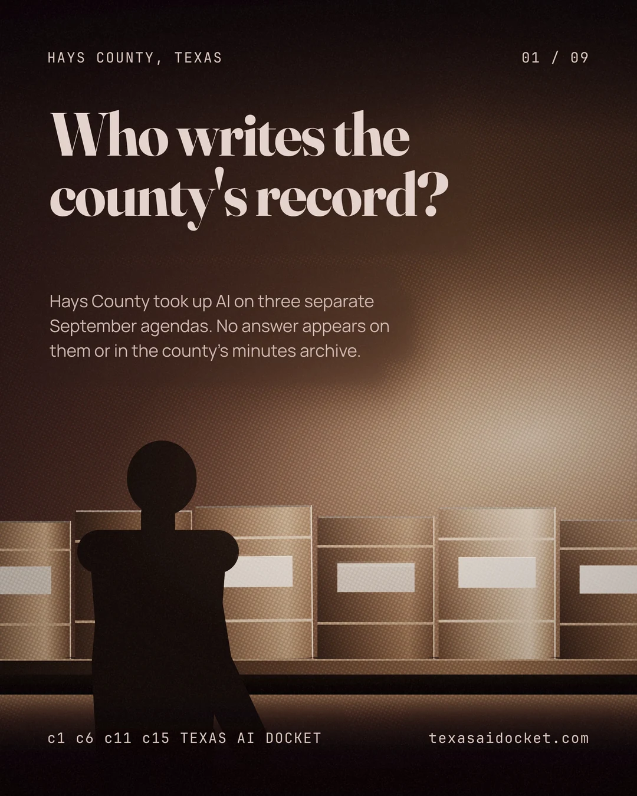
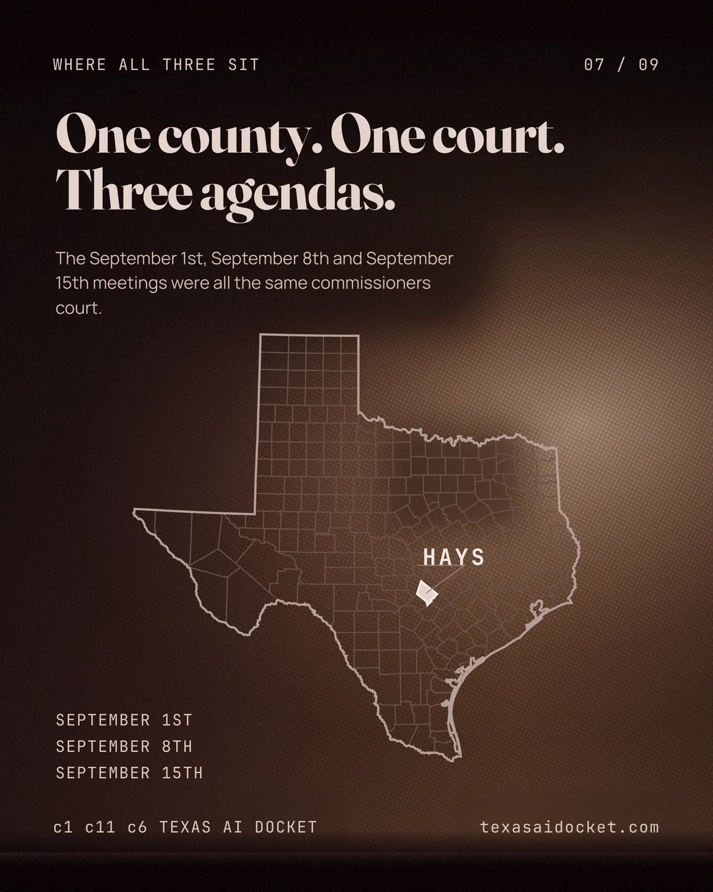
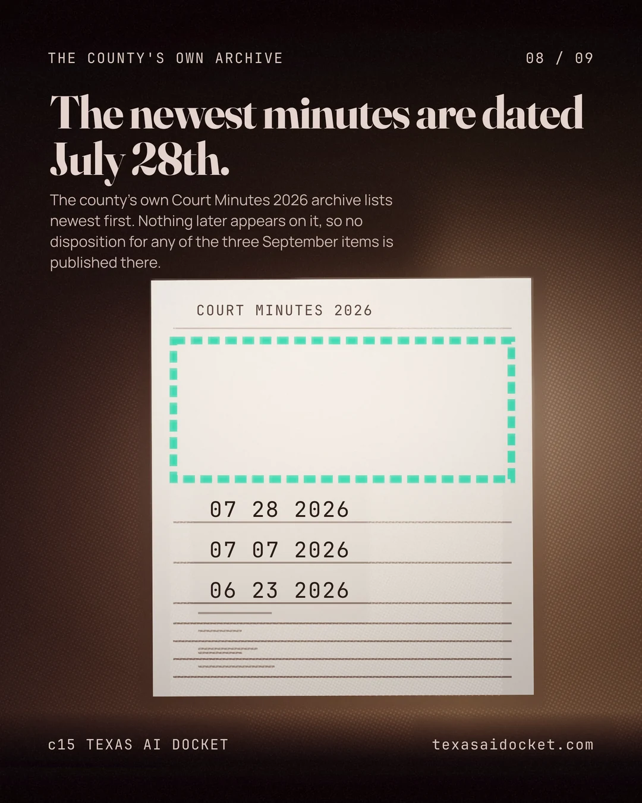

Articles · Hays County
Who writes the county's record?
AI appeared on the county's agendas for police reports, surveillance and official minutes. The published minutes leave the outcomes unresolved.
Read the story





The same commissioners court faced different questions about who writes the county's record. The sheriff's office committed to hold off on an AI report-writing tool. The county clerk sought permission to buy software for official meeting minutes. A separate agenda raised rules for AI in surveillance.
The agendas document those items. They don't establish how the court disposed of them. When the county minutes archive was checked on September 18th, 2026, its newest entry was July 28th, 2026. The September outcomes remain unverified in that archive.
Police reports await the court's approval
The September 1st, 2026 agenda recorded the sheriff's commitment not to activate Axon Draft One. The item describes it as an AI report-writing feature within the Axon AI Era platform.
Axon describes a tool that turns body-camera audio into draft report narratives. The company says an officer must review and approve a narrative before it can be submitted. Those are the vendor's descriptions of the product.
The county's commitment extends to new AI features the platform may offer under the contract. Their operational use would require a return to the commissioners court for approval. An officer's review and the court's authorization are separate conditions in these documents.
A separate question about surveillance
The September 8th, 2026 agenda then put the governance of AI in surveillance before the same court. The item contemplated guidelines, safeguards and limits for county use of those technologies.
The next item concerned Tyler Technologies contract amendments, including report-writing services. Their placement beside each other doesn't establish a connection. The agenda identifies separate items and doesn't settle whether the court adopted the proposed AI policy.
AI for the minutes themselves
By the September 15th, 2026 agenda, the clerk's office was seeking authorization to obtain AI Minutes from Govably. The listed first-year amount was $19,200.00. The same item requested a waiver of the county's requirement to obtain competing quotes.
Govably says its software writes official meeting minutes from recordings, live sessions or pasted transcripts. The agenda establishes a request to buy that product. It doesn't establish an approved purchase or show the software in use.
What the record still needs
The missing September minutes leave a gap in the public record checked for this edition. That absence doesn't mean the court took no action. It means the archive doesn't supply the dispositions needed to report those actions as confirmed.
Minutes or another official record of the court's actions could resolve the proposals. Until then, the distinction matters. A commitment is documented. A purchase was requested. A policy was placed on an agenda. Which of those became the county's operating rules?
Sources for this story
- Hays County Commissioners Court agenda, September 1st, 2026
- Hays County Commissioners Court agenda, September 15th, 2026
- Hays County Commissioners Court agenda, September 8th, 2026
- Hays County Archive Center, Court Minutes 2026
- Axon, Draft One product page
- Govably, AI Minutes
Claim-by-claim verification · 18 claims
A Hays County Commissioners Court agenda published at seq=135 is headed for a meeting on September 1st, 2026.
Commissioners Court – SEPTEMBER 1, 2026
That September 1st agenda carried an item acknowledging that the Hays County Sheriff's Office had committed not to activate or implement Axon Draft One.
Acknowledgement of the Hays County Sheriff's Office's commitment to not activate or implement Axon Draft One
The agenda item itself describes Axon Draft One as a report-writing feature inside the Axon AI Era platform.
an AI-enabled report-writing feature within the Axon AI Era platform
The same item extends the commitment to any new AI-based features the platform may later make available, and conditions their operational use on the Commissioners Court granting approval first.
any new AI-based features the Axon AI Era platform may make available under the related contract without returning to the Hays County Commissioners Court for approval
The Axon Draft One item names Becerra and Hipolito on its sponsor line.
Hays County Commissioners Court for approval. BECERRA/HIPOLITO
A second Hays County Commissioners Court agenda, at seq=136, is headed for a meeting on September 15th, 2026.
Commissioners Court – SEPTEMBER 15, 2026
The September 15th agenda carried an item to authorize the County Clerk's Office to obtain AI Minutes from Govably, Inc.
authorize the County Clerk's Office to obtain AI Minutes through Govably, Inc.
The Govably item states the first year's amount as $19,200.00.
in the amount of $19,200.00 for year one
The same item asks the Court to waive the county purchasing policy that requires three quotes.
authorize a waiver to the purchasing policy of obtaining three quotes
The Govably item names Becerra, Cardenas and Hunt on its sponsor line.
purchasing policy of obtaining three quotes. BECERRA/CARDENAS/HUNT
A third Hays County Commissioners Court agenda, at seq=141, is headed for a meeting on September 8th, 2026.
Commissioners Court – September 8, 2026
The September 8th agenda carried an item on the use, implementation, oversight and governance of artificial intelligence in connection with surveillance equipment and related services.
regarding the use, implementation, oversight, and governance of Artificial Intelligence (AI) in connection with surveillance equipment, technologies, programs, software, systems, data collection, data analysis, and related services
That item contemplated adopting a policy statement setting guidelines, standards, safeguards and limits on AI-enabled surveillance technologies used by the county.
possible adoption of a policy statement establishing guidelines, standards, safeguards, and limitations concerning the use of AI-enabled surveillance technologies by Hays County
The item listed immediately after the AI surveillance item on the September 8th agenda concerns two contract amendments with Tyler Technologies, one of them for report writing services.
one for NG911 interface and one for report writing services
The county's own Court Minutes 2026 archive lists no meeting later than July 28th, 2026, so no minutes for any September 2026 meeting appear there.
07 28 2026 07 07 2026 06 23 2026
Axon's own product page says Draft One uses generative AI and body-worn camera audio to produce draft report narratives.
leveraging generative AI and body-worn camera audio to produce high-quality draft report narratives in seconds
Axon's product page also states that a Draft One narrative can't be submitted without an officer reviewing and approving it.
these narratives cannot be submitted without officer review and approval
Govably's own site says its product uses AI to write official meeting minutes from a recording, a live session or a pasted transcript.
Govably uses AI to write official meeting minutes from any source